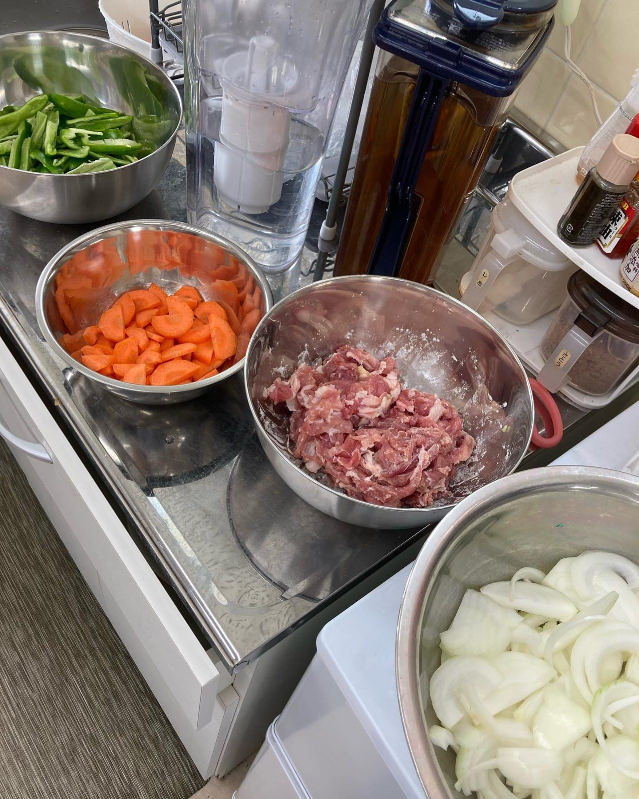
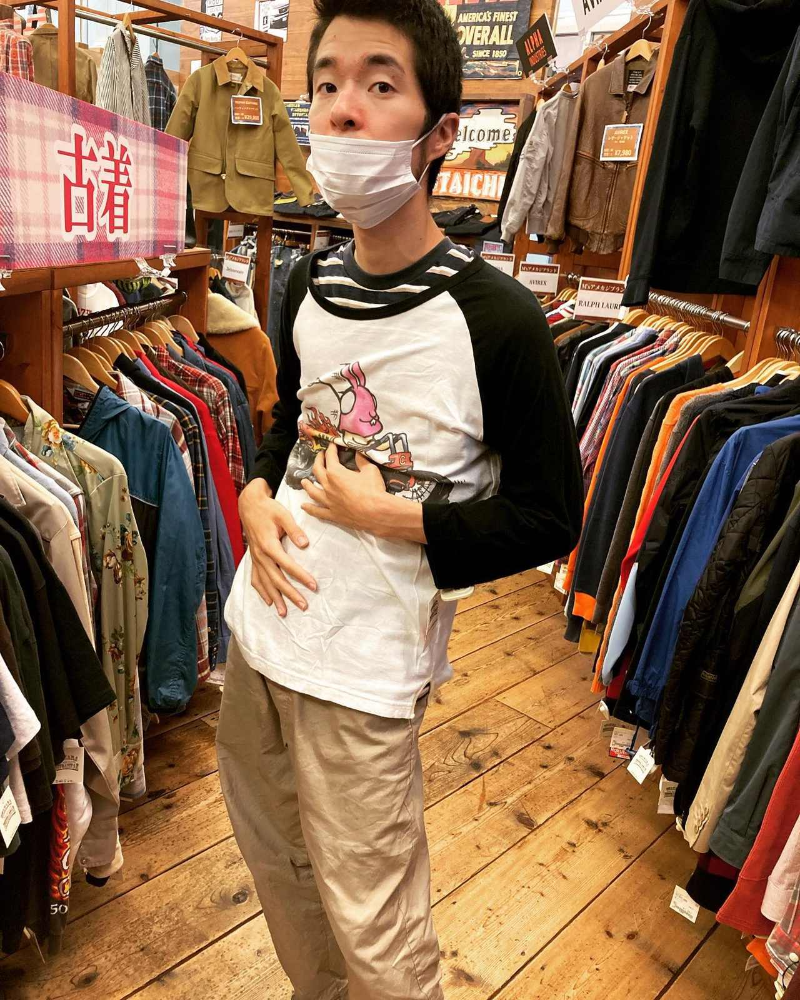
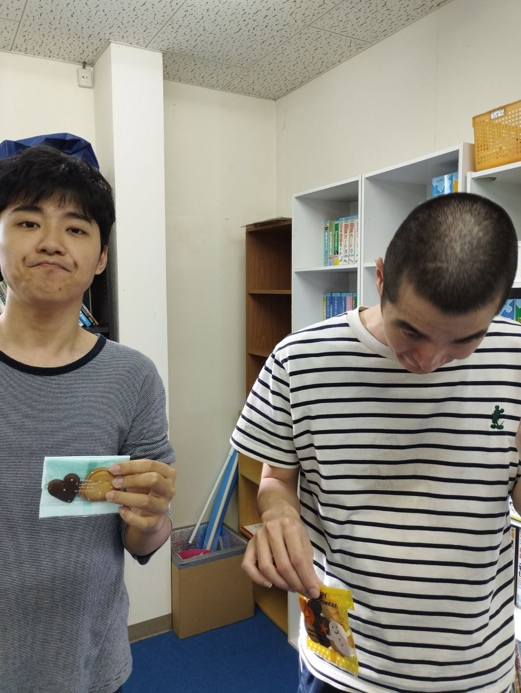
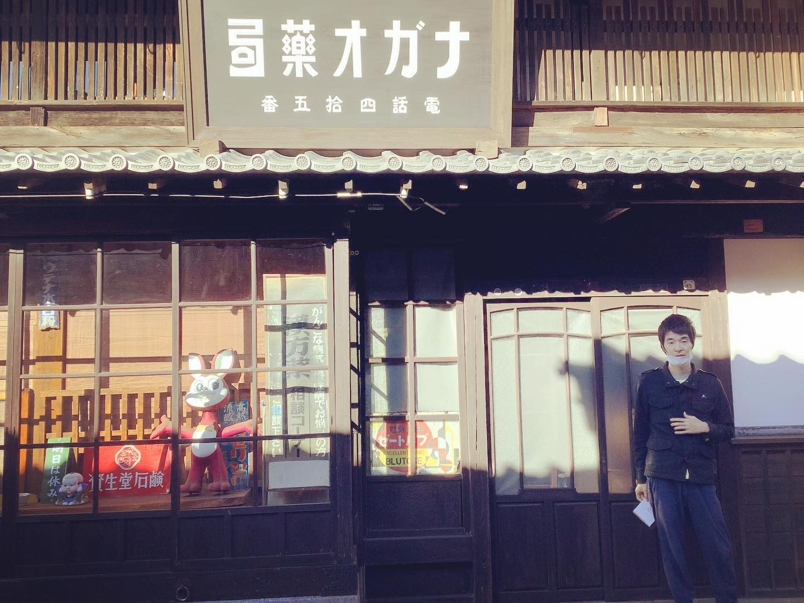

訪問｜アウトリーチ
金斗雲
どこへでも飛んでいく、
魔法の雲

家から出られない、窓口に行けない。
その状態を前提に、自宅から始めます。
アウトリーチってなに？
「困っているのに、自分から相談できない人」のところへ、私たちから積極的に関わっていくことです。
特に、精神的な不調から外に出にくくなっている人。いわゆる「ひきこもり」の状態にある人や、そのご家族。
「誰にも会いたくない」「窓口に行く気力がない」そんなときでも、こちらから手を伸ばします。

私たちが大切にしていること
相談の窓口と訪問の支援を一緒に運営しています。
まずは話を聞くことから始める
無理に外に出そうとしない
「誰かが気にかけてくれている」と感じてもらえる関係をつくる
「利用するかわからない」という段階でも大丈夫です。

費用の心配も少なくできます
公的制度を利用すると、自己負担を大きく抑えることができます。
（所得に応じて負担上限が設定されており、多くの方が無料または低額で利用されています）
まずは制度の説明からでも構いません。

こんなときにご相談ください
家族が長く家から出られなくなっている
精神的な不調で、相談に行けない
どこに相談していいかわからない
費用が心配でサービスをためらっている
まずはお話だけでも大丈夫です。
スタッフ
介護福祉士、看護師など有資格者がご対応いたします
対象外に出にくい方、そのご家族
訪問地域四日市市・菰野町など三重県内
費用公的制度の利用可。所得に応じた負担上限あり。手続きはこちらで代行
申し込み電話またはLINE